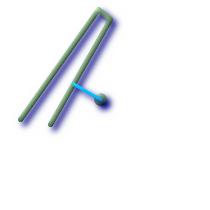
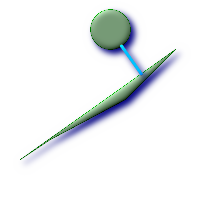

ST_ShortestLine — Returns the 2-dimensional shortest line between two geometries
geometry ST_ShortestLine(geometry
g1, geometry
g2);
Returns the 2-dimensional shortest line between two geometries. The function will only return the first shortest line if more than one, that the function finds. If g1 and g2 intersects in just one point the function will return a line with both start and end in that intersection-point. If g1 and g2 are intersecting with more than one point the function will return a line with start and end in the same point but it can be any of the intersecting points. The line returned will always start in g1 and end in g2. The length of the line this function returns will always be the same as st_distance returns for g1 and g2.
Availability: 1.5.0
 Shortest line between point and linestring
SELECT ST_AsText(
ST_ShortestLine('POINT(100 100)'::geometry,
'LINESTRING (20 80, 98 190, 110 180, 50 75 )'::geometry)
) As sline;
sline
-----------------
LINESTRING(100 100,73.0769230769231 115.384615384615)
|  shortest line between polygon and polygon
SELECT ST_AsText(
ST_ShortestLine(
ST_GeomFromText('POLYGON((175 150, 20 40, 50 60, 125 100, 175 150))'),
ST_Buffer(ST_GeomFromText('POINT(110 170)'), 20)
)
) As slinewkt;
LINESTRING(140.752120669087 125.695053378061,121.111404660392 153.370607753949)
|